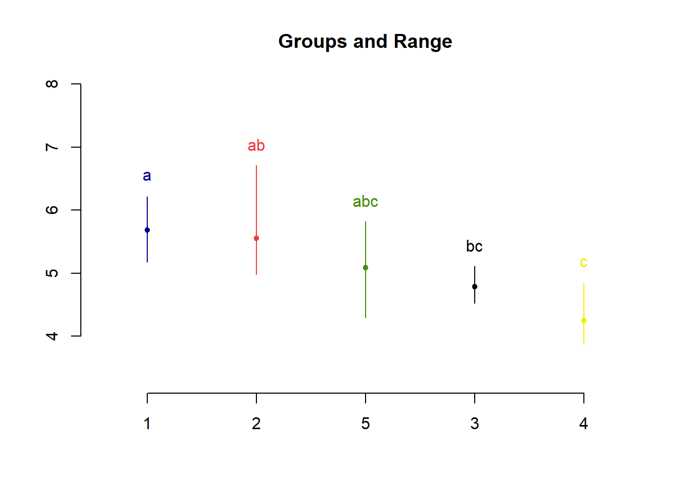
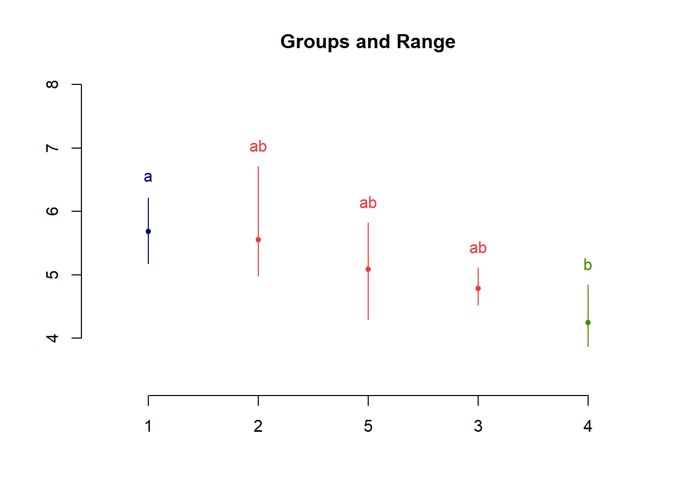
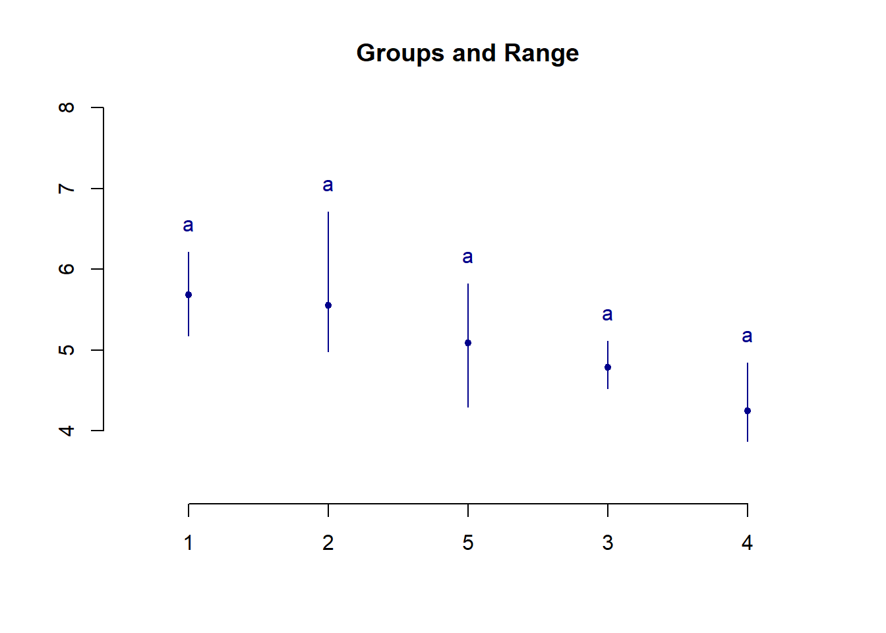
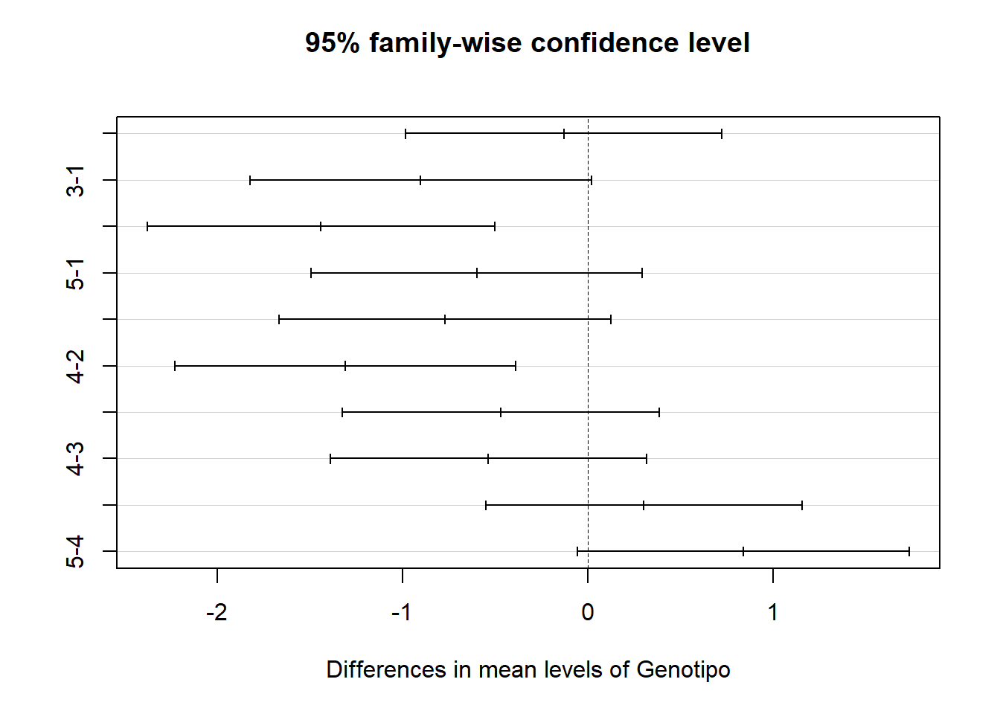

Considere o conjunto de dados para o experimento balanceado, com cinco genótipos de milho e quatro repetições, seguindo um delineamento inteiramente casualizado, tendo-se observado o peso das espigas de cada parcela, conforme apresentado a seguir:
Tabela1: Peso da espiga de milho delimitado por diferentes genótipos
| Tratamentos | 1 | 2 | 3 | 4 | Total | Média |
|---|---|---|---|---|---|---|
| 1 | 5,95 | 6,21 | 5,40 | 5,18 | 22,74 | 5,6850 |
| 2 | 5,07 | 6,71 | 5,46 | 4,98 | 22,22 | 5,5550 |
| 3 | 4,82 | 5,11 | 4,68 | 4,52 | 19,13 | 4,7825 |
| 4 | 3,87 | 4,16 | 4,11 | 4,84 | 16,98 | 4,2450 |
| 5 | 5,53 | 5,82 | 4,29 | 4,70 | 20,34 | 5,0850 |
| Total | 101,41 | 5,0705 |
Anteriormente trabalhamos com parte do conjunto de dados da Tabela 1. Assumindo-se que todas as pressuposições para a realização da ANOVA foram atendidas, o teste para as hipóteses:
\(H_0\) : \(\mu_{1} = \mu_{2} = \mu_{3} = \mu_{4} = \mu_{5}\)
\(H_1\) : pelo menos um contraste de médias difere de zero
apresentou o seguinte resultado:
dadosC <- data.frame(
Genotipo = factor(rep(1:5,
each = 4)),
prod = c(5.95, 6.21, 5.40, 5.18,
5.07, 6.71, 5.46, 4.98,
4.82, 5.11, 4.68, 4.52,
3.87, 4.16, 4.11, 4.84,
5.53, 5.82, 4.29, 4.70))
modelo.lmC <- lm(prod ~ Genotipo,
dadosC)
anova(modelo.lmC)Considerando-se um nível de 5% de significância, p-valor = 0,0164 menor que 0,05, há evicências para rejeitarmos \(H_0\), desse modo, não podemos afirmar que todas as médias são iguais. Aqui estudaremos algumas técnicas de comparações múltiplas das médias: duas a duas, média de cada tratamento comparada com a média de um controle e testes (t e F) para contrastes ortogonais. Um teste de comparações múltiplas pode ser classificado como protegido ou não protegido. O teste é dito protegido se realizado somente mediante rejeição de \(H_0\) para o teste F (ANOVA). E, um teste é dito não protegido quando realizado independentemente do resultado para o teste F (ANOVA). Todo teste de comparações múltiplas é realizado para contrastes entre médias (ou totais).
Definição: Um contraste de médias é definido pela combinação linear das mesmas, ou seja,
\[\text{L} = a_{1}\mu_{1} + a_{2}\mu_{2} + . . . + a_{I}\mu_{I}\]
tal que, \(\sum^I_{i=1} a_i = 0\), para o caso em que todos os tratamentos apresentam o mesmo número de repetições \(J\). Generalizando, \(\text{L} = a_1\mu_{1} + a_2\mu_{2} + . . . + a_I\mu_{I}\) ,tal que, \(\sum^I_{i=1} n_ia_j = 0\), é um contraste, em que \(n_i\) é o número de repetições do \(i\)−ésimo tratamento. São exemplos de contrastes:
\[\text{L}_1 = \mu_{1} − \mu_{2}\] \[\text{L}_2 = 2\mu_{1} − \mu_{2} − \mu_{3}\] \[\text{L}_3 = \mu_{3} − \mu_{4}\]
Dado um contraste \(\text{L} = a_1\mu_{1} + a_2\mu_{2} + . . . + a_I\mu_{I}\), sua estimativa é dada por \(\text{L} = a_1\mu_{1} + a_2\mu_{2} + . . . + a_I\mu_{I}\).
Assim, para o caso específico:
\[\text{L} = \mu_1 - \mu_2 \Rightarrow \hat{L} = \hat{\mu}_1 - \hat{\mu}_2 = \bar{y}_1-\bar{y}_2\]
Tal estimativa pode ser interpretada da seguinte forma: se \(\text{L} > 0\) temos que a média do grupo “+” é superior à média do grupo “-”. analogamente, \(\text{L} < 0\), a média do grupo “-” é superior à média do grupo “+”.
A comparação de todas as médias duas a duas, implica na realização de testes para hipóteses do tipo:
\(H_0: \mu_i = \mu_{i'} \Leftrightarrow \mu_i - \mu_{i'} = 0\)
\(H_1: \mu_i \neq \mu_{i'} \Leftrightarrow \mu_i - \mu_{i'} \neq 0\)
Para tanto é necessário um modelo estatístico. Seja,
\[y_{ij} = \mu + \tau_i + e_{ij} = \mu_i + e_{ij},\] em que \(e_{ij} \stackrel{iid}{\sim} N(0, \sigma^2)\).
\(i = 1, . . . , I\) e \(j = 1, . . . , n_i\)
Seja o contraste \(\text{L} = \mu_i - \mu_{i'}\) então:
\[\hat{L} = \hat{\mu}_i - \hat{\mu}_{i'}.\] \[\text{E}(\hat{L}) = \mu_i-\mu_{i'}\] Assim,
\[Var(\hat{L}) = \Bigg(\frac{1}{n_i} + \frac{1}{n_{i'}}\Bigg)\sigma^2\]
Hipóteses do teste:
\(H_0: \mu_i = \mu_{i'} \Leftrightarrow \mu_i - \mu_{i'} = 0\)
\(H_1: \mu_i \neq \mu_{i'} \Leftrightarrow \mu_i - \mu_{i'} \neq 0\)
A estatística do teste é
\[t_\text{cal}=\frac{\hat{L} - \text{E}(\hat{L})}{\sqrt{\widehat{\text{Var}}(\hat{L})}} = \frac{\hat{\mu}_i - \hat{\mu}_{i'} - 0}{\sqrt{\Bigg(\frac{1}{n_i} + \frac{1}{n_{i'}}\Bigg)\hat{\sigma}^2}}.\]
Rejeita-se \(H_0\), ao nível \(100\times\alpha\%\) de significância, se \(|t_\text{cal}| \geq |t_{(\alpha/2,\nu)}| = |t_\text{tab}|\), em que \(\nu\) corresponde ao número de graus de liberdade do resíduo.
Para o exemplo de produtividade de milho testaremos todos os conjuntos de hipóteses:
\(H_0 : \mu_{1} − \mu_{2} = 0\) versus \(H_1 : \mu_{1} − \mu_{2}\neq 0\)
\(H_0 : \mu_{1} − \mu_{3} = 0\) versus \(H_1 : \mu_{1} − \mu_{3}\neq 0\)
\(H_0 : \mu_{1} − \mu_{4} = 0\) versus \(H_1 : \mu_{1} − \mu_{4}\neq 0\)
\(H_0 : \mu_{1} − \mu_{5} = 0\) versus \(H_1 : \mu_{1} − \mu_{5}\neq 0\)
\(H_0 : \mu_{2} − \mu_{3} = 0\) versus \(H_1 : \mu_{2} − \mu_{3}\neq 0\)
\(H_0 : \mu_{2} − \mu_{4} = 0\) versus \(H_1 : \mu_{2} − \mu_{4}\neq 0\)
\(H_0 : \mu_{2} − \mu_{5} = 0\) versus \(H_1 : \mu_{2} − \mu_{5}\neq 0\)
\(H_0 : \mu_{3} − \mu_{4} = 0\) versus \(H_1 : \mu_{3} − \mu_{4}\neq 0\)
\(H_0 : \mu_{3} − \mu_{5} = 0\) versus \(H_1 : \mu_{3} − \mu_{5}\neq 0\)
\(H_0 : \mu_{4} − \mu_{5} = 0\) versus \(H_1 : \mu_{4} − \mu_{5}\neq 0\)
Os valores absolutos das estimativas dos contrastes são:
Tabela 2: Contrastes de médias dos diferentes genótipos de milho
| médias | \(\mu_{2}\) | \(\mu_{3}\) | \(\mu_{4}\) | \(\mu_{5}\) |
|---|---|---|---|---|
| \(\mu_{1}\) | 0,1300 | 0,9025 | 1,4400 | 0,6000 |
| \(\mu_{2}\) | - | 0,7725 | 1,3100 | 0,4700 |
| \(\mu_{3}\) | - | - | 0,5375 | 0,3025 |
| \(\mu_{4}\) | - | - | - | 0,8400 |
E a diferença mínima significativa (dms), ou seja, o valor crítico (em valor absoluto)
\[\text{d.m.s} = t_{(\alpha/2,\nu)}\sqrt{\Bigg(\frac{1}{n_i} + \frac{1}{n_{i'}}\Bigg)\hat{\sigma}^2},\] ou seja,
\[d.m.s. = t(\alpha/2, \text{gl}_\text{Res})\sqrt{\frac{2\times \text{QMRes}}{J}}\]
\[d.m.s. = 2.13\sqrt{\frac{2\times 0.3212}{4}}= 0.8536\]
As diferenças significativas, assumindo \(\alpha = 0, 05\) estão sinalizadas com ∗.
Tabela 3: Denotando as diferenças minimas significativas sobre os contrastes
| médias | \(\mu_{2}\) | \(\mu_{3}\) | \(\mu_{4}\) | \(\mu_{5}\) |
|---|---|---|---|---|
| \(\mu_{1}\) | 0,1300 | 0,9025* | 1,4400* | 0,6000 |
| \(\mu_{2}\) | - | 0,7725 | 1,3100* | 0,4700 |
| \(\mu_{3}\) | - | - | 0,5375 | 0,3025 |
| \(\mu_{4}\) | - | - | - | 0,8400 |
Outro modo de apresentarmos os resultados para as comparações das médias duas a duas é o que segue. Inicialmente, ordenamos as médias em ordem decrescente e acrescentamos as letras de tal modo que médias seguidas da mesma letra não apresentam diferença siginificativa.
Tabela 4: Classificação dos tratamentos pelo teste LSD de Fisher
| Genótipo | média estimada |
|---|---|
| 1 | 5,6850 a |
| 2 | 5,5550 ab |
| 5 | 5,0850 abc |
| 3 | 4,7825 bc |
| 4 | 4,2450 c |
Logo, considerando-se o nível de 5% de significância, há evidências para afirmarmos que os genótipos 1 e 3 não apresentam, em média, a mesma produtividade. Há evidências para afirmarmos que os genéticos 1 e 4, assim como os genótipo 2 e 4, não apresentam, em média, amesma produtividade. O mesmo não se pode afirmar a respeito das demais comparações.
Entretanto o teste t como realizado, apresenta alguns problemas. Suponha que sejam 10 os tratamentos em análise. Quantas seriam as comparações duas a duas? Quarenta e cinco.
Supondo o nível de significância 0,05 para cada comparação, qual será o nível de significância conjunto, assumindo que as comparações sejam independentes?
\[1-(1-\alpha)^{c} = 1 - (1 - 0,05)^{45} = 0,9006\]
em que c corresponde ao número de comparações. O que nos leva a refletir sobre o nível de significância por comparação e conjunto. Nível de significância por comparação (comparisonwise): controla a taxa de erro tipo I por comparação. Nível de significância por experimento (experimentwise): controla a taxa de erro tipo I considerando todo o conjunto de comparações.
No teste t, podemos controlar a taxa de erro máxima por experimento usando a taxa de erro por comparação dada por α/c, em que c corresponde ao número de comparações de duas médias. Assim definimos acorreção de Bonferroni.
Para o exemplo de produtividade de milho com a correção de Bonferroni temos a nova diferença mínima significativa,
\[\text{d.m.s.} = t((0,05/10)/2, \text{gl}_{\text{Res}})\sqrt{\frac{2\times \text{QMRes}}{J}}\] \[= 3.29 \sqrt{\frac{2\times 0.3212}{4}} = 1.3185\]
Resultando em apenas uma diferença significativa, entre a média de produtividade dos genótipos 1 e 4, como pode ser observado a seguir.
Tabela 5: Denotando as diferenças minimas significativas sobre os contrastes
| médias | \(\mu_{2}\) | \(\mu_{3}\) | \(\mu_{4}\) | \(\mu_{5}\) |
|---|---|---|---|---|
| \(\mu_{1}\) | 0,1300 | 0,9025 | 1,4400* | 0,6000 |
| \(\mu_{2}\) | - | 0,7725 | 1,3100 | 0,4700 |
| \(\mu_{3}\) | - | - | 0,5375 | 0,3025 |
| \(\mu_{4}\) | - | - | - | 0,8400 |
Tabela 6: Classificação dos genótipo pelo teste de LSD de Fisher com correção de BonFerroni
| Genótipo | média estimada |
|---|---|
| 1 | 5,6850 a |
| 2 | 5,5550 ab |
| 5 | 5,0850 ab |
| 3 | 4,7825 ab |
| 4 | 4,2450 b |
O teste de Tukey também é um teste para conjuntos de hipóteses do tipo
\[H_0: \mu_i = \mu_{i'} \Leftrightarrow \mu_i - \mu_{i'} = 0\]
\[H_1: \mu_i \neq \mu_{i'} \Leftrightarrow \mu_i - \mu_{i'} \neq 0\]
Tal teste é baseado na amplitude total estudentizada de I variáveis aleatórias normais independentes e controla a taxa máxima de erro tipo I por experimento.
Rejeita-se H0 se \[\displaystyle{|\hat{\mu}_i - \hat{\mu}_{i'}| \geq \Delta}\]
em que \[\displaystyle{\Delta = q_{(\alpha, I, \text{glRes})}\sqrt{\frac{\widehat{\mbox{Var}}(\hat{L})}{2}} = q_{(\alpha, I, \text{glRes})}\sqrt{\Bigg(\frac{1}{n_i} + \frac{1}{n_{i'}}\Bigg)\frac{\text{QMRes}}{2}}}\]
Se \(n_i=n_{i'}=J\), então, \(\displaystyle{\Delta = q_{(\alpha, I, \text{glRes})}\sqrt{\frac{\text{QMRes}}{\text{J}}}}.\)
Para o exemplo de produtividade de milho a diferença mínima significativa para o teste de Tukey será
\[\displaystyle{\Delta = q_{(\alpha, I, \text{glRes})}\sqrt{\frac{\text{QMRes}}{J}}}.\]
\[ = 3.29\sqrt{\frac{0.3212}{5}}=1.2375.\]
Resultando em duas diferença significativas, entre as médias de produtividade dos genótipos 1 e 4, e entre as médias de produtividade dos genótipos 2 e 4, como pode ser observado a seguir.
Tabela 7: Denotando as diferenças minimas significativas sobre os contrastes
| médias | \(\mu_{2}\) | \(\mu_{3}\) | \(\mu_{4}\) | \(\mu_{5}\) |
|---|---|---|---|---|
| \(\mu_{1}\) | 0,1300 | 0,9025 | 1,4400* | 0,6000 |
| \(\mu_{2}\) | - | 0,7725 | 1,3100* | 0,4700 |
| \(\mu_{3}\) | - | - | 0,5375 | 0,3025 |
| \(\mu_{4}\) | - | - | - | 0,8400 |
Tabela 8: Classificação dos genótipos pelo teste de Tukey
| Genótipo | média estimada |
|---|---|
| 1 | 5,6850 a |
| 2 | 5,5550 a |
| 5 | 5,0850 ab |
| 3 | 4,7825 ab |
| 4 | 4,2450 b |
Assim como LSD de Fisher (t) e o teste de Tukey, as hipóteses são do tipo
\[H_0: \mu_i = \mu_{i'} \Leftrightarrow \mu_i - \mu_{i'} = 0\]
\[H_1: \mu_i \neq \mu_{i'} \Leftrightarrow \mu_i - \mu_{i'} \neq 0\]
Porém, este é um teste realizado em múltiplos estágios e recomendado para o caso balanceado (mesmo número de repetições por tratamento).
Por ser um teste em múltiplos estágios, o nível de significância (\(\alpha\)) varia de acordo com o número de médias ordenadas abrangidas (k)
\[\alpha' = 1-(1-\alpha)^{k-1}.\]
No primeiro estágio o teste a ser realizado é entre a maior e a menor média, nesse caso o número de médias abrangidas será igual ao número de tratamentos, \(I\). Caso não haja evidências para a rejeição de H0 não são realizados outros testes e conclui-se que as médias não diferem entre si, duas a duas. Caso haja evidências para rejeição de \(H_0\) o teste é realizado entre a maior e a segunda menor média, abrangendo \(I − 1\) médias, e assim por diante.
Diferentemente do teste de Tukey, que controla a taxa de erro tipo I por experimento, este controla a taxa de erro tipo I por comparação, e por este motivo é um teste menos rigoroso que o teste de Tukey, ou seja, pode rejeitar \(H_0\) com maior facilidade.
Cabe salientar que também é um teste baseado na amplitude total estudentizada, operando com suas potências.
O critério de decisão consiste em rejeitar \(H_0\) se
\[\displaystyle{|\hat{\mu}_i - \hat{\mu}_{i'}| \geq D_i},\]
em que
\[\displaystyle{D_i = z_{(\alpha, k, \text{glRes})}\sqrt{\frac{\text{QMRes}}{J}} }\]
e \(k\) é o número de médias envolvidas.
Exemplo Para o exemplo de produtividade de milho as médias ordenadas são:
Tabela 9: médias por genótipo
| Genótipo | média estimada |
|---|---|
| 1 | 5,6850 |
| 2 | 5,5550 |
| 3 | 4,7825 |
| 4 | 4,2450 |
| 5 | 5,0850 |
O primeiro teste a ser realizado é para as hipóteses
\[H_0: \mu_1 = \mu_{4} \Leftrightarrow \mu_1 - \mu_{4} = 0 \qquad \text{ vs} \qquad H_1: \mu_1 \neq \mu_{4} \Leftrightarrow \mu_1 - \mu_{4} \neq 0.\]
A primeira diferença mínima significativa abrangerá as cinco médias, D5
\[\displaystyle{D_5 = z_{(0.05, I, glRes)}\sqrt{\frac{\text{QMRes}}{J}}}\]
\[ = 3.31\sqrt{\frac{0.3212}{4}}=0.9385\] Como |\(\mu_1 - \mu_{4}\)| = 1, 4400 > 0, 9385 = D5 há evidências para rejeitarmos a hipótese H0.
Desse modo, o próximo teste será para as hipóteses:
\[H_0: \mu_1 = \mu_{3} \Leftrightarrow \mu_1 - \mu_{3} = 0 \qquad \text{ vs} \qquad H_1: \mu_1 \neq \mu_{3} \Leftrightarrow \mu_1 - \mu_{3} \neq 0.\]
Assim:
\[\displaystyle{D_4 = z_{(0.05,I-1, glRes)}\sqrt{\frac{QMRes}{J}}}\]
\[ = 3.25\sqrt{\frac{0.3212}{4}}=0.9210\] Como |\(\mu_1 - \mu_{3}\)| = 0, 9025 < 0, 9210 = D4 não há evidências para rejeitarmos a hipótese \(H_0\) . Desse modo, concluímos que as médias de produtividade para os genótipos 1, 2, 3 e 5 não diferem entre si.
O próximo teste será para as hipóteses:
\[H_0: \mu_2 = \mu_{4} \Leftrightarrow \mu_2 - \mu_{4} = 0 \qquad \text{ vs} \qquad H_1: \mu_2 \neq \mu_{4} \Leftrightarrow \mu_2 - \mu_{4} \neq 0.\]
que abrange quatro médias. Assim, usamos a diferença mínima significativa D4.
Como |\(\mu_2 - \mu_{4}\)| = 1, 3100 > 0, 9210 = D4 há evidências para rejeitarmos a hipótese \(H_{0}\). Desse modo, concluímos que a produtividade para o genótipo 2 difere da produtividade para o genótipo 4, em média.
O próximo teste será para as hipóteses
\[H_0: \mu_5 = \mu_{4} \Leftrightarrow \mu_5 - \mu_{4} = 0 \qquad \text{ vs} \qquad H_1: \mu_5 \neq \mu_{4} \Leftrightarrow \mu_5 - \mu_{4} \neq 0.\]
\[\displaystyle{D_3 = z_{(0.05,I-2, glRes)}\sqrt{\frac{\text{QMRes}}{J}}}\]
\[ = 3.16\sqrt{\frac{0.3212}{4}}=0.8954\]
Como |\(\mu_2 - \mu_{4}\)| = 0, 8400 < 0, 8954 = D3 não há evidências para rejeitarmos a hipótese \(H_0\). Desse modo, concluímos que as médias de produtividade para os genótipos 3, 4 e 5 não diferem entre si.
Tabela 10: Classificação dos genótipo pelo teste de Duncan
| Genótipo | média estimada |
|---|---|
| 1 | 5,6850 a |
| 2 | 5,5550 a |
| 5 | 5,0850 ab |
| 3 | 4,7825 ab |
| 4 | 4,2450 b |
Hipóteses para o teste de Dunnett são do tipo
\[H_0: \mu_i = \mu_{c} \Leftrightarrow \mu_i - \mu_{c} = 0\]
\[H_1: \mu_i \neq \mu_{c} \Leftrightarrow \mu_i - \mu_{c} \neq 0\]
ou seja, serve para comparar duas médias de tratamentos, sendo uma delas a média de um tratamento referência (controle). O teste de Dunnett controla a taxa máxima de erro tipo I, não excedendo \(\alpha\).
O critério de decisão consiste em rejeitar H0 se
\[\displaystyle{|\hat{\mu}_i - \hat{\mu}_{c}| \geq d_{(\alpha, I-1, glRes)}\sqrt{\frac{2\times \text{QMRes}}{J}}}.\]
Para o exemplo dos cinco genótipos de milho. Assumindo o segundo genótipo como sendo o controle, temos as seguintes hipóteses de interesse:
\(H_0: \mu_1 = \mu_{2} \Leftrightarrow \mu_1 - \mu_{2} = 0\) vs \(H_1: \mu_1 \neq \mu_{2} \Leftrightarrow \mu_1 - \mu_{2} \neq 0\)
\(H_0: \mu_3 = \mu_{2} \Leftrightarrow \mu_3 - \mu_{2} = 0\) vs \(H_1: \mu_3 \neq \mu_{2} \Leftrightarrow \mu_3 - \mu_{2} \neq 0\)
\(H_0: \mu_4 = \mu_{2} \Leftrightarrow \mu_4 - \mu_{2} = 0\) vs \(H_1: \mu_4 \neq \mu_{2} \Leftrightarrow \mu_4 - \mu_{2} \neq 0\)
\(H_0: \mu_5 = \mu_{2} \Leftrightarrow \mu_5 - \mu_{2} = 0\) vs \(H_1: \mu_5 \neq \mu_{2} \Leftrightarrow \mu_5 - \mu_{2} \neq 0\)
A diferença mínima significativa é dada por:
\[\displaystyle{|\hat{\mu}_i - \hat{\mu}_{c}| \geq d_{(\alpha, I-1, glRes)}\sqrt{\frac{2\times \text{QMRes}}{J}}}.\]
\[dms= d_{0.05, 4, 15)}\sqrt{\frac{2\times \text{QMRes}}{J}}= 2.73\sqrt{\frac{2\times 0.3212}{4}}= 1.0940\]
As diferenças observadas:
\(|\hat{\mu}_1 - \hat{\mu}_{2}| = 0, 1300 ns\)
\(|\hat{\mu}_3 - \hat{\mu}_{2}| = 0, 7725 ns\)
\(|\hat{\mu}_4 - \hat{\mu}_{2}| = 1, 3100 ∗\)
\(|\hat{\mu}_5 - \hat{\mu}_{2}| = 0, 4700 ns\)
Há evidências para rejeitarmos a igualdade entre as médias apenas quando comparadas asmédias de produtividade para os genótipos 2 e 4, ao nível de 5% de significância, pelo teste de Dunnett.
Dois contrastes, L1 e L2,
\[\text{L}_1 = a_1\mu_1 + a_2\mu_2 + \ldots + a_I\mu_I, \text{ em que, } \sum_{i=1}^I a_i = 0\] \[\text{L}_2 = b_1\mu_1 + b_2\mu_2 + \ldots + b_I\mu_I, \text{ em que, } \sum_{i=1}^I b_i = 0\]
são ditos ortogonais se \(\displaystyle{\sum_{i=1}^I a_ib_i=0}\), desde que todos os tratamentos apresentem os mesmo número de repetições.
Exemplo 1 Considere os contrastes L1, L2 e L3, dados por:
\[\text{L}_1 = \mu_1 - \mu_2\\ \nonumber \text{L}_2 = 2\mu_2 -\mu_3 - \mu_4\\ \nonumber \text{L}_3 = \mu_3 - \mu_4 \nonumber\]
Vamos verificar se são ortogonais. (i) L1 e L2:
Tabela 11: Verificação sobre os constrastes 1 e 2
| contraste | \(\mu_1\) | \(\mu_2\) | \(\mu_3\) | \(\mu_4\) |
|---|---|---|---|---|
| L1 | 1 | -1 | 0 | 0 |
| L2 | 0 | 2 | -1 | -1 |
| Produto | 0 | -2 | 0 | 0 |
Como a soma dos produtos dos coeficientes é diferente de zero (=-2), os contrastes L1 e L2 não são ortogonais.
Tabela 12: Verificação sobre os constrastes 1 e 3
| contraste | \(\mu_1\) | \(\mu_2\) | \(\mu_3\) | \(\mu_4\) |
|---|---|---|---|---|
| L1 | 1 | -1 | 0 | 0 |
| L3 | 0 | 0 | -1 | -1 |
| Produto | 0 | 0 | 0 | 0 |
Como a soma dos produtos dos coeficientes é nula, os contrastes L1 e L3 são ortogonais.
Tabela 13: Verificação sobre os constrastes 2 e 3
| contraste | \(\mu_1\) | \(\mu_2\) | \(\mu_3\) | \(\mu_4\) |
|---|---|---|---|---|
| L2 | 0 | 2 | -1 | -1 |
| L3 | 0 | 0 | -1 | -1 |
| Produto | 0 | 0 | 0 | 0 |
Como a soma dos produtos dos coeficientes é nula, os contrastes L2 e L3 são ortogonais.
Os testes t e F para contrastes ortogonais são equivalentes; Teste F: apresentação da decomposição do número de graus de liberdade de tratamentos em um grau de liberdade associado a cada contraste; Os contrastes devem ser estabelecidos antes da realização da análise.
\[\displaystyle{t_{L}^2 = \left(\frac{\hat{L}}{\sqrt{\widehat{\text{Var}}(\hat{L})}}\right)^2 = \text{F} = \frac{{\text{SQ}_\text{L}/1}}{\text{QMRes}} = \frac{{\hat{\text{L}}^2}}{{\frac{\sum_ia_i^2}{J}}\text{QMRes}}}.\]
em que \(\hat{L} = a_1\hat{\mu}_1 + a_2\hat{\mu}_2 + \ldots + a_I\hat{\mu}_I\), \(\displaystyle{\widehat{\text{Var}}(\hat{L}) = \frac{\sum_{i=1}^I a_i^2}{J}QMRes}\) e todos os tratamentos apresentam o mesmo número de repetições, \(J\).
\[\displaystyle{{\text{SQ}_L = \frac{\hat{L}^2}{\frac{\sum_i a_i^2}{J}} = \frac{\left(J\times\hat{L}\right)^2}{J\times\sum_i a_i^2}}}.\]
Exemplo Suponha um experimento instalado para avaliar a eficiência de fungicidas na produção de batatas. Foram utilizados quatro fungicidas + controle (sem aplicação de fungicida), sendo que os dois primeiros usam um modo de ação (modo A) e os dois últimos fungicidas outro modo de ação (modo B). Forme um grupo de contrastes ortogonais.
Com o objetivo de comparar a média do controle com a média das médias dos demais tratamentos, pode-se ter a seguinte hipótese: \[\displaystyle{H_0: \mu_c = \frac{\mu_{A_1} + \mu_{A_2} + \mu_{B_1} + \mu_{B_2}}{4}},\] que, em termos de contraste é dada por \[\displaystyle{H_0: 4\mu_c - \mu_{A_1} - \mu_{A_2} - \mu_{B_1} - \mu_{B_2} = 0}.\]
Com o objetivo de comparar a média dos dois diferentes modos de ação, a média das médias dos fungicidas \(A_1\) e \(A_2\) com a média das médias dos fungicidas \(B_1\) e \(B_2\), pode-se ter a seguinte hipótese: \[\displaystyle{H_0: \frac{\mu_{A_1} + \mu_{A_2}}{2} = \frac{ \mu_{B_1} + \mu_{B_2}}{2}},\] que, em termos de contraste é dada por \[\displaystyle{H_0: \mu_{A_1} + \mu_{A_2} - \mu_{B_1} - \mu_{B_2} = 0}.\]
Comparar as médias dos dois diferentes fungicidas com modo de ação A. Tem-se: \[\displaystyle{H_0: \mu_{A_1} = \mu_{A_2}},\] que, em termos de contraste é dada por \[\displaystyle{H_0: \mu_{A_1} - \mu_{A_2} = 0}.\]
Comparar as médias dos dois diferentes fungicidas com modo de ação B. Tem-se: \[\displaystyle{H_0: \mu_{B_1} = \mu_{B_2}},\] que, em termos de contraste é dada por \[\displaystyle{H_0: \mu_{B_1} - \mu_{B_2} = 0}.\]
Fazendo a soma dos produtos dos coeficientes dos pares de contrastes será possível verificar que são ortogonais dois a dois.
Exemplo: Produtividade de milho
Os dados da Tabela 14 referem-se à produtividade de milho (kg/100m\(^2\)) de quatro variedades diferentes (\(I = 4\)), em um experimento instalado segundo o delineamento inteiramente casualizado (DIC) com cinco repetições (\(J = 5\)).
Tabela 14: Produtividade do milho em 4 variedades diferentes
| Variedades | 1 | 2 | 3 | 4 | 5 | média |
|---|---|---|---|---|---|---|
| A | 25 | 26 | 20 | 23 | 21 | 23 |
| B | 31 | 25 | 28 | 27 | 24 | 27 |
| C | 22 | 26 | 28 | 25 | 29 | 26 |
| D | 33 | 29 | 31 | 34 | 28 | 31 |
Suponha que as variedades A e B foram produzidas por um instituto de pesquisa e as variedades C e D, por outro. Forme um grupo de contrastes ortogonais de interesse (o que deveria ser feito antes das observações serem obtidas).
Motivados pela origem das variedades, pode-se ter interesse em testar as seguintes hipóteses:
\(H_0: \frac{\mu_A + \mu_B}{2} = \frac{\mu_C + \mu_D}{2}\) vs \(H_1: \frac{\mu_A + \mu_B}{2} \neq \frac{\mu_C + \mu_D}{2}\), que consistem em avaliar as médias dos institutos de pesquisa.
\(H_0: \mu_A = \mu_B\) vs \(H_1: \mu_A \neq \mu_B\), com o objetivo de comparar médias de produtividade das variedades do instituto de pesquisa 1.
\(H_0: \mu_C = \mu_D\) vs \(H_1: \mu_C \neq \mu_D\), , com o objetivo de comparar médias de produtividade de variedades do instituto das pesquisa 2.
Desse modo, as hipóteses de interesse, em termos dos contrastes, são:
\(H_0: \mu_A + \mu_B - \mu_C - \mu_D = 0\) vs \(H_1: \mu_A + \mu_B - \mu_C - \mu_D \neq 0\)
\(H_0: \mu_A - \mu_B = 0\) vs \(H_1: \mu_A - \mu_B \neq 0\)
\(H_0: \mu_C - \mu_D = 0\) vs \(H_1: \mu_C - \mu_D \neq 0\)
Para testes aquelas hipóteses podemos usar o teste F, fazendo a decomposição da soma de quadrados de tratamentos em \(I-1\) contrastes ortogonais
Sendo \(\mu_A = 23, \; \mu_B = 27, \; \mu_C = 26, \; \text{e} \; \mu_D = 31\), tem-se:
\(\hat{L}_1= \hat{\mu}_A + \hat{\mu}_B - \hat{\mu}_C - \hat{\mu}_D = 23+27-26-31 = -7\)
\(\hat{L}_2: \hat{\mu}_A - \hat{\mu}_B = 23-27 = -4\)
\(\hat{L}_3: \hat{\mu}_C - \hat{\mu}_D = 26-31 = -5\)
Somas de quadrados:
\[\displaystyle{SQ_L = \frac{\hat{L}^2}{\frac{\sum_i a_i^2}{J}} = \frac{\left(J\times\hat{L}\right)^2}{J\times\sum_i a_i^2}}\]
\[SQ_{L_1} = {\frac{[5\times(23+27-26-31)]^2}{5\times[1^2 + 1^2 + (-1)^2 + (-1)^2]}} = 61,25\]
\[SQ_{L_2} = \frac{\left[5\times(23-27)\right]^2}{5\times \left[1^2 + (-1)^2\right]} = 40,00\]
\[SQ_{L_3}=\frac{\left[5\times(26-31)\right]^2}{5\times \left[1^2 + (-1)^2\right]} = 62,50\]
Tabela 15: Quadro da ANOVA para o teste de contrastes ortogonais
| F.V. | gl | SQ | QM | F | Ftab |
|---|---|---|---|---|---|
| Tratamentos | 3 | 163,75 | 54,58 | 7,80 | 3,24 |
| (A+B)vs(C+D) | 1 | 61,25 | 61,25 | 8,75 | 4,40 |
| A vs B | 1 | 40,00 | 40,00 | 5,71 | 4,40 |
| C vs D | 1 | 62,50 | 62,50 | 8,93 | 4,40 |
| Residuo | 16 | 112,00 | 7,00 | ||
| Total | 19 | 275,75 |
Ao nível de 5% de significância (individual), rejeitamos a hipótese {\(H_0: \text{L}_1 = \mu_A + \mu_B - \mu_c - \mu_D = 0\)}. Logo, há evidências para afirmarmos que a média de produtividade das variedades vindas do instituto de pesquisa 1 (A e B) difere da média de produtividade das variedades vindas do instituto de pesquisa 2 (C e D) e, como \(\hat{L}_1 = -7 < 0\), temos que a média de produtividade do instituto 2 é maior do que a média de produtividade do instituo 1.
Ao nível de 5% de significância (individual), rejeitamos a hipótese {\(H_0: \text{L}_2 = \mu_A - \mu_B = 0\)}. Logo, há evidências para afirmarmos que as médias de produtividade das variedades vindas do instituto de pesquisa 1 diferem entre si (\(\mu_A \neq \mu_B\)). Como \(\hat{L}_2 = -4 < 0\), temos que a média de produtividade da variedade B é maior do que a média de produtividade da variedade A.
Ao nível de 5% de significância (individual), rejeitamos a hipótese {\(H_0: \text{L}_3 = \mu_C - \mu_D = 0\)}. Logo, há evidências para afirmarmos que as médias de produtividade das variedades vindas do instituto de pesquisa 2 diferem entre si (\(\mu_C \neq \mu_D\)). Como \(\hat{L}_3 = -5 < 0\), temos que a média de produtividade da variedade D é maior do que a média de produtividade da variedade D.
O nível de significância conjunto é dado por \(100\times[1-(1-0,05)^3] = 14,26\%\)
library(agricolae)
LSD <- with(dadosC,
LSD.test(y = prod,
trt = Genotipo,
DFerror = modelo.lmC$df.residual,
MSerror = anova(modelo.lmC)$`Mean Sq`[2],
alpha = 0.05,
p.adj = "none"))
LSD## $statistics
## MSerror Df Mean CV t.value LSD
## 0,3211783 15 5,0705 11,17692 2,13145 0,8541481
##
## $parameters
## test p.ajusted name.t ntr alpha
## Fisher-LSD none Genotipo 5 0,05
##
## $means
## prod std r se LCL UCL Min Max Q25 Q50 Q75
## 1 5,6850 0,4768298 4 0,283363 5,081026 6,288974 5,18 6,21 5,3450 5,675 6,0150
## 2 5,5550 0,7976841 4 0,283363 4,951026 6,158974 4,98 6,71 5,0475 5,265 5,7725
## 3 4,7825 0,2503830 4 0,283363 4,178526 5,386474 4,52 5,11 4,6400 4,750 4,8925
## 4 4,2450 0,4163732 4 0,283363 3,641026 4,848974 3,87 4,84 4,0500 4,135 4,3300
## 5 5,0850 0,7114539 4 0,283363 4,481026 5,688974 4,29 5,82 4,5975 5,115 5,6025
##
## $comparison
## NULL
##
## $groups
## prod groups
## 1 5,6850 a
## 2 5,5550 ab
## 5 5,0850 abc
## 3 4,7825 bc
## 4 4,2450 c
##
## attr(,"class")
## [1] "group"plot(LSD)
# usando funções da biblioteca DescTools
library(DescTools)
with(dadosC,
pairwise.t.test(prod,
Genotipo,
p.adj = "none"));##
## Pairwise comparisons using t tests with pooled SD
##
## data: prod and Genotipo
##
## 1 2 3 4
## 2 0,7501 - - -
## 3 0,0397 0,0730 - -
## 4 0,0027 0,0052 0,1998 -
## 5 0,1551 0,2591 0,4620 0,0534
##
## P value adjustment method: noneLSD.b <- with(dadosC,
LSD.test(y = prod,
trt = Genotipo,
DFerror = modelo.lmC$df.residual,
MSerror = anova(modelo.lmC)$`Mean Sq`[2],
alpha = 0.05,
p.adj = "bonferroni"))
LSD.b## $statistics
## MSerror Df Mean CV t.value MSD
## 0,3211783 15 5,0705 11,17692 3,286039 1,316833
##
## $parameters
## test p.ajusted name.t ntr alpha
## Fisher-LSD bonferroni Genotipo 5 0,05
##
## $means
## prod std r se LCL UCL Min Max Q25 Q50 Q75
## 1 5,6850 0,4768298 4 0,283363 5,081026 6,288974 5,18 6,21 5,3450 5,675 6,0150
## 2 5,5550 0,7976841 4 0,283363 4,951026 6,158974 4,98 6,71 5,0475 5,265 5,7725
## 3 4,7825 0,2503830 4 0,283363 4,178526 5,386474 4,52 5,11 4,6400 4,750 4,8925
## 4 4,2450 0,4163732 4 0,283363 3,641026 4,848974 3,87 4,84 4,0500 4,135 4,3300
## 5 5,0850 0,7114539 4 0,283363 4,481026 5,688974 4,29 5,82 4,5975 5,115 5,6025
##
## $comparison
## NULL
##
## $groups
## prod groups
## 1 5,6850 a
## 2 5,5550 ab
## 5 5,0850 ab
## 3 4,7825 ab
## 4 4,2450 b
##
## attr(,"class")
## [1] "group"plot (LSD.b)
library(ExpDes.pt)##
## Attaching package: 'ExpDes.pt'## The following objects are masked from 'package:agricolae':
##
## lastC, order.group, tapply.statwith(dadosC,
dic(Genotipo,
prod,
quali = TRUE,
mcomp = "tukey",
sigF = 0.05,
sigT = 0.05))## ------------------------------------------------------------------------
## Quadro da analise de variancia
## ------------------------------------------------------------------------
## GL SQ QM Fc Pr>Fc
## Tratamento 4 5,5078 1,37695 4,2872 0,016443
## Residuo 15 4,8177 0,32118
## Total 19 10,3255
## ------------------------------------------------------------------------
## CV = 11,18 %
##
## ------------------------------------------------------------------------
## Teste de normalidade dos residuos ( Shapiro-Wilk )
## Valor-p: 0,5230705
## De acordo com o teste de Shapiro-Wilk a 5% de significancia, os residuos podem ser considerados normais.
## ------------------------------------------------------------------------
##
## ------------------------------------------------------------------------
## Teste de homogeneidade de variancia
## valor-p: 0,4256466
## De acordo com o teste de bartlett a 5% de significancia, as variancias podem ser consideradas homogeneas.
## ------------------------------------------------------------------------
##
## Teste de Tukey
## ------------------------------------------------------------------------
## Grupos Tratamentos Medias
## a 1 5,685
## a 2 5,555
## ab 5 5,085
## ab 3 4,7825
## b 4 4,245
## ------------------------------------------------------------------------library(agricolae)
Tukey. <- with(dadosC,
HSD.test(prod,
Genotipo,
15,
7.00))
Tukey.## $statistics
## MSerror Df Mean CV MSD
## 7 15 5,0705 52,1793 5,776978
##
## $parameters
## test name.t ntr StudentizedRange alpha
## Tukey Genotipo 5 4,366985 0,05
##
## $means
## prod std r se Min Max Q25 Q50 Q75
## 1 5,6850 0,4768298 4 1,322876 5,18 6,21 5,3450 5,675 6,0150
## 2 5,5550 0,7976841 4 1,322876 4,98 6,71 5,0475 5,265 5,7725
## 3 4,7825 0,2503830 4 1,322876 4,52 5,11 4,6400 4,750 4,8925
## 4 4,2450 0,4163732 4 1,322876 3,87 4,84 4,0500 4,135 4,3300
## 5 5,0850 0,7114539 4 1,322876 4,29 5,82 4,5975 5,115 5,6025
##
## $comparison
## NULL
##
## $groups
## prod groups
## 1 5,6850 a
## 2 5,5550 a
## 5 5,0850 a
## 3 4,7825 a
## 4 4,2450 a
##
## attr(,"class")
## [1] "group"plot(Tukey.)
# diferenças mínimas significativas
qtukey((1 - 0.05)^((5 - 1):1), 5:2, 15)*
+ sqrt(anova(modelo.lmC)[2,3]/4)## [1] 0,9384552 0,9210000 0,8953778 0,8541481 # usando a biblioteca DescTools
# precisamos de um modelo ajustado pela função aov()
modelo.aovC <- aov(prod ~ Genotipo,
data = dadosC)
(Duncan1 <- PostHocTest(modelo.aovC,
method = "duncan"))##
## Posthoc multiple comparisons of means : Duncan's new multiple range test
## 95% family-wise confidence level
##
## $Genotipo
## diff lwr.ci upr.ci pval
## 2-1 -0,1300 -0,9841481 0,72414808 0,7501
## 3-1 -0,9025 -1,8235000 0,01850001 0,0543 .
## 4-1 -1,4400 -2,3784552 -0,50154482 0,0048 **
## 5-1 -0,6000 -1,4953778 0,29537780 0,1754
## 3-2 -0,7725 -1,6678778 0,12287780 0,0863 .
## 4-2 -1,3100 -2,2310000 -0,38899999 0,0080 **
## 5-2 -0,4700 -1,3241481 0,38414808 0,2591
## 4-3 -0,5375 -1,3916481 0,31664808 0,1998
## 5-3 0,3025 -0,5516481 1,15664808 0,4620
## 5-4 0,8400 -0,0553778 1,73537780 0,0642 .
##
## ---
## Signif. codes: 0 '***' 0.001 '**' 0.01 '*' 0.05 '.' 0.1 ' ' 1 plot(Duncan1)
O pesquisador precisa avaliar se houve diferença significativa entre as dietas a 95% de intervalo de confiança (p<0,05)? Aplique os testes de comparação de médias de Tukey, Duncan e Fisher.
Tabela 1. Influência da dieta no tempo de coagulação do sangue de 24 animais.
| Dietas | 1 | 2 | 3 | 4 | 5 | 6 |
|---|---|---|---|---|---|---|
| A | 62 | 60 | 63 | 59 | 63 | 59 |
| B | 63 | 67 | 66 | 71 | 64 | 65 |
| C | 68 | 66 | 71 | 67 | 68 | 63 |
| D | 59 | 66 | 68 | 64 | 63 | 61 |
| condição | 1 | 2 | 3 | 4 |
|---|---|---|---|---|
| A | 312.9 | 300.0 | 286.5 | 289.0 |
| B | 320.0 | 330.0 | 297.5 | 315.0 |
| C | 280.0 | 290.0 | 298.5 | 305.0 |
| D | 260.0 | 270.0 | 260.0 | 276.5 |
O pesquisador deseja verificar quais condições de tratamento térmico foram diferentes a um nível de significância de α= 0,05. Realizar o teste de Tukey, Duncan e Fisher
| A | B | C | D | E |
|---|---|---|---|---|
| 124 | 111 | 117 | 104 | 142 |
| 116 | 101 | 142 | 128 | 139 |
| 101 | 130 | 121 | 130 | 133 |
| 118 | 108 | 123 | 103 | 120 |
| 118 | 127 | 121 | 121 | 127 |
| 120 | 129 | 148 | 119 | 149 |
| 110 | 122 | 141 | 106 | 150 |
| 127 | 103 | 122 | 107 | 149 |
| 106 | 122 | 139 | 107 | 120 |
| 130 | 127 | 125 | 115 | 116 |
O pesquisador deseja verificar se houve diferença significativa entre as raças de animais quais foram essas diferenças a um nível de significância de α= 0,05 segundo o teste de Tukey, Duncan e Fisher
| Tratamentos | 1 | 2 | 3 |
|---|---|---|---|
| Vapan s/ fungicida | 4,65 | 5,18 | 5,52 |
| Vapan + Dithane M-45 | 4,86 | 4,81 | 4,51 |
| Vapan + Thiran | 4,54 | 4,39 | 5,20 |
| Brometo de metila s/ fungicida | 4,55 | 5,16 | 6,00 |
| Brometo de metila + Dithane M-45 | 4,73 | 5,51 | 5,09 |
| Brometo de metila + Thiran | 4,54 | 5,81 | 4,77 |
| Basamid s/ fungicida | 3,89 | 4,74 | 5,43 |
| Basamid + Dithane M-45 | 3,91 | 5,75 | 4,52 |
| Basamid + Thiran | 5,61 | 5,40 | 5,10 |
| PCNB s/ fungicida | 2,68 | 2,65 | 2,56 |
| PCNB + Dithane M-45 | 2,90 | 2,71 | 2,93 |
| PCNB + Thiran | 2,78 | 2,84 | 2,30 |
| Testemunha s/ fungicida | 3,48 | 2,75 | 3,06 |
| Testemunha + Dithane M-45 | 2,65 | 2,47 | 2,83 |
| Testemunha + Thiran | 2,50 | 2,60 | 2,66 |
Fazer a análise exploratória da amostra.
Calcular as médias e as variâncias de tratamentos.
Fazer a análise de variância concluindo sobre o valor do teste F.
Fazer todas as comparações pareadas entre médias de tratamentos usando o teste de Tukey a um nível \(\alpha = 0,05\) de significância. Tirar conclusões.
Fazer todas as comparações pareadas entre médias de tratamentos usando o teste de Duncan a um nível \(\alpha = 0,05\) de significância. Tirar conclusões.